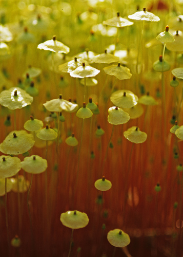

Splachnaceae
Dung Moss Family / Collar Moss Family
The Splachnaceae is a remarkable family of acrocarpous mosses uniquely adapted to growing on nitrogen-rich substrates like animal dung or carrion. They are famous for their often conspicuously swollen and brightly colored hypophysis (tissue below the capsule), which attracts insects (especially flies) to aid in spore dispersal – a rare phenomenon in mosses.
Overview
Splachnaceae is a highly specialized family belonging to the order Splachnales. Its members exhibit fascinating adaptations to their ephemeral, nutrient-rich habitats. Growing almost exclusively on dung (coprophilous) or decaying animal remains (necrophilous), these mosses have evolved specific mechanisms for spore dispersal involving insects (entomophily).
The most striking adaptation is the modification of the hypophysis (apophysis) – the sterile tissue connecting the capsule to the seta. In many species, particularly in the genera Splachnum and Tetraplodon, this structure becomes greatly enlarged, swollen, and vividly colored (yellow, red, purple, pink, black). These structures, combined with volatile chemical compounds released by the moss, attract flies that normally visit dung or carrion. The flies land on the sporophyte, pick up sticky spores, and transport them to new, suitable dung patches, ensuring the moss's propagation in its specialized niche.
The family is widespread, particularly in boreal, arctic, and temperate regions where large herbivores provide a consistent source of dung.
Quick Facts
- Scientific Name: Splachnaceae Grev. & Arn.
- Common Name: Dung Moss Family, Collar Moss Family
- Number of Genera: Approximately 6 (e.g., Splachnum, Tayloria, Tetraplodon, Moseniella)
- Number of Species: Approximately 70
- Distribution: Widespread, particularly common in boreal, arctic, and temperate regions of the Northern Hemisphere, also present in Southern Hemisphere montane areas.
- Evolutionary Group: Bryophytes - Mosses (Class: Bryopsida, Order: Splachnales)
Key Characteristics
Growth Form and Habit
Plants are acrocarpous, typically forming loose to dense tufts or patches, often bright green or yellowish-green. Stems are erect, simple or sparsely branched.
Leaves
Leaves are generally broad (ovate, obovate, spathulate, or lingulate), soft, and often appear somewhat flaccid or translucent. Margins are typically entire or weakly toothed near the apex. The costa (midrib) is single, usually relatively slender, and typically ends well below the leaf apex. Leaf cells are characteristically large, thin-walled, smooth (non-papillose), and hexagonal to rectangular (parenchymatous). Leaves often shrink and contort considerably upon drying.
Sporophyte (Capsule and Hypophysis)
Sporophytes are terminal on stems. The seta (stalk) is usually long, erect, and often pale or yellowish. The capsule (urn) itself is relatively small, typically erect, symmetric, and ovoid to cylindrical.
The most remarkable feature is the hypophysis (apophysis), the sterile tissue at the base of the capsule. In many genera (Splachnum, Tetraplodon), this is highly differentiated, often dramatically swollen or inflated (sometimes umbrella-shaped or globose), frequently brightly colored (yellow, red, purple, pink, black), and can be much larger and more conspicuous than the spore-bearing urn. In Tayloria, the hypophysis is less swollen but often distinct in color or texture. This structure functions to attract insects.
The peristome is single, composed of 16 teeth. These teeth are often fused in pairs or groups of four at the base and are characteristically reflexed (bent sharply backwards) against the capsule wall when dry, fully exposing the spores for insect dispersal. The calyptra is small, hood-like (cucullate) or cap-like (mitrate), and usually falls off early.
Habitat and Ecology
Highly specialized substrate requirements. Members grow almost exclusively on nitrogen-rich organic matter, primarily animal dung (especially from herbivores like moose, caribou, deer, cattle) or decaying animal carcasses, bones, antlers, or occasionally on nutrient-enriched soil near latrines or bird colonies. They exhibit entomophily – spore dispersal facilitated by insects, mainly flies, attracted by the visual cue of the colored hypophysis and olfactory cues (volatile compounds mimicking dung/carrion). The sticky spores adhere to the flies and are carried to new suitable substrates.
Field Identification
Identifying Splachnaceae is often straightforward due to their unique habitat and sporophyte features:
Primary Identification Features
- Habitat: Growth directly on animal dung or carrion is the strongest indicator.
- Swollen and/or Colored Hypophysis: The presence of a distinct, often inflated and brightly colored structure below the capsule is diagnostic for many genera (especially Splachnum, Tetraplodon).
- Acrocarpous Growth on Specific Substrate: Finding tufts of moss with terminal sporophytes directly on dung/carrion.
Secondary Identification Features
- Broad, Soft Leaves: Leaves often appear large, soft, and somewhat translucent.
- Large, Thin-walled Leaf Cells: Visible with good magnification.
- Long Seta: Sporophytes are typically long-stalked.
- Reflexed Peristome Teeth: Teeth bent back against the capsule when dry (requires magnification).
Seasonal Identification Tips
- Sporophyte Visibility: The colorful sporophytes are most conspicuous when mature, typically in summer in temperate/boreal regions.
- Habitat Persistence: While individual dung pats decay, finding the moss often depends on finding suitable substrate, which can occur throughout the growing season.
Common Confusion Points
- Habitat is Key: Few other mosses grow directly on dung. Mosses growing around dung are likely different families.
- Funariaceae (e.g., Funaria hygrometrica): Can grow on nutrient-rich soil (e.g., after fires, near dung) and has broad leaves and long setae, but lacks the specialized, swollen/colored hypophysis and has a different peristome structure (double, oblique teeth).
- Sterile Plants: Without sporophytes, identification can be harder, relying on the broad, soft leaves with large cells and association with potential dung/carrion sites. However, sterile Splachnaceae are less commonly encountered than fertile ones.
Field Guide Quick Reference
Look For:
- Acrocarpous moss growing on dung or carrion
- Swollen, often brightly colored hypophysis below capsule
- Leaves broad, soft, often translucent
- Seta long, capsule erect
Key Variations:
- Genera Splachnum, Tayloria, Tetraplodon
- Hypophysis shape/color varies
- Peristome teeth reflexed dry
- Insect-dispersed spores
Notable Examples
The family showcases remarkable diversity in sporophyte morphology related to insect attraction.

Splachnum luteum
Yellow Dung Moss / Umbrella Moss
A striking species found on herbivore dung in northern boreal and arctic regions. It has relatively small gametophytes but produces spectacular sporophytes with extremely large, inflated, umbrella-shaped, bright yellow hypophyses that dwarf the actual capsule. This large display attracts flies for spore dispersal.

Tetraplodon mnioides
Narrow-leaved Collar Moss
Widespread in boreal and arctic regions, growing on dung, carcasses, bones, or owl pellets. It forms dense, often reddish-brown tufts. The hypophysis is swollen and conspicuous, typically dark red to purplish-black and somewhat glossy, but usually not as dramatically large as in Splachnum. The peristome teeth are characteristically grouped in fours.

Tayloria lingulata
Ling-leaved Collar Moss
A species found in arctic and alpine regions, often on soil enriched by animal droppings rather than directly on dung. Its hypophysis is less conspicuously swollen than in Splachnum or Tetraplodon, often just forming a distinct neck below the capsule, sometimes differently colored. The genus Tayloria shows less extreme hypophysis modification compared to other genera.
Phylogeny and Classification
Splachnaceae is the core family of the distinct order Splachnales within the Bryopsida. This order represents a specialized evolutionary lineage characterized by adaptations to ephemeral, nutrient-rich substrates and, notably, the evolution of entomophily (insect-mediated spore dispersal).
Molecular and morphological evidence indicates that the Splachnales are most closely related to the order Meesiales (containing the family Meesiaceae). Meesiaceae also often grow in nutrient-rich, wet habitats (like fens) but lack the specialized hypophyses and insect dispersal mechanisms of Splachnaceae. Together, Splachnales and Meesiales form a distinct clade within the Bryopsida.
Position in Plant Phylogeny
- Kingdom: Plantae
- Division: Bryophyta (Mosses)
- Class: Bryopsida
- Order: Splachnales
- Family: Splachnaceae
Evolutionary Significance
The Splachnaceae family is highly significant for:
- Entomophily (Insect Dispersal): Being the primary example of insect-mediated spore dispersal in mosses, showcasing remarkable co-evolutionary adaptations (visual and olfactory mimicry).
- Habitat Specialization: Demonstrating extreme adaptation to ephemeral, high-nutrient substrates (dung, carrion), a niche rarely occupied by other bryophytes.
- Morphological Innovation: The evolution of the highly modified and often brightly colored hypophysis is a striking example of structural adaptation for a specific ecological function.
- Phylogenetic Relationships: Its relationship with Meesiaceae helps clarify evolutionary pathways within certain lineages of Bryopsida.